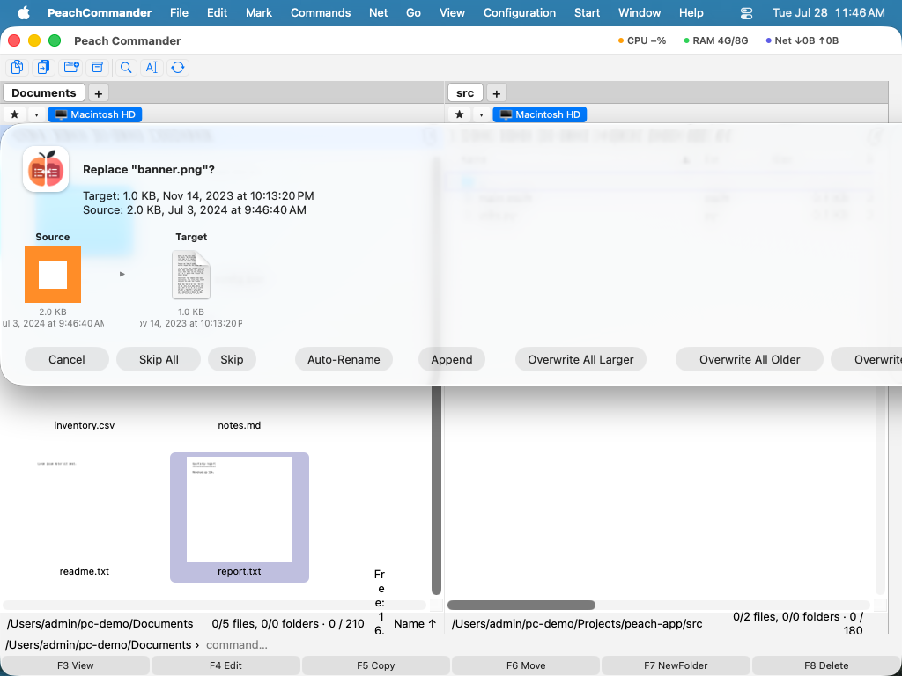

파일 복사
Peach Commander는 나란히 놓인 두 패널을 중심으로 구성됩니다. 한 패널에는 작업 중인 파일이, 다른 패널에는 대상이 있습니다. 복사는 활성 패널에서 선택된 항목을 가져와 다른 패널에 표시된 폴더에 복제본을 넣고, 원본은 제자리에 남겨 둡니다. 이는 드래그하지 않고도 두 위치 사이에서 파일과 폴더를 복제하는 가장 빠른 방법입니다.
선택 항목을 다른 패널로 복사
- 한 패널에서 복사할 항목이 들어 있는 폴더를 엽니다.
- 다른 패널에서 복사본이 들어갈 폴더를 엽니다.
- 복사할 파일과 폴더를 선택합니다. 아무것도 선택하지 않으면 커서 아래의 항목이 사용됩니다.
- F5를 누릅니다. 대상 경로가 이미 채워진 상태로 복사 대화상자가 열립니다.
 (그림: 복사 대화상자. 대상 경로는 다른 패널을 가리킵니다. 옵션을 사용하여 복사를 세밀하게 조정하십시오.)
(그림: 복사 대화상자. 대상 경로는 다른 패널을 가리킵니다. 옵션을 사용하여 복사를 세밀하게 조정하십시오.)
- 필요하면 대상을 조정한 다음 확인하여 복사를 시작합니다.
복사 옵션
확인하기 전에 복사 동작 방식을 변경할 수 있습니다.
- 새 파일만 — 복사본이 이미 존재하고 같은 시점이거나 더 새로운 항목은 건너뛰므로, 변경된 파일만 업데이트됩니다.
- 메타데이터 유지 — 복사본에 날짜, 권한 및 기타 파일 속성을 유지합니다. 기본적으로 켜져 있습니다.
- 속도 제한 — 전송 속도를 제한하여 대용량 복사가 디스크나 네트워크 연결을 포화시키지 않도록 합니다.
- 이름 바꾸기 마스크 — 대상 필드에 와일드카드 패턴(예:
*.bak)을 입력하여 복사되는 항목의 이름을 바꿉니다.
작업을 지켜보는 대신 백그라운드 대기열로 보낼 수도 있습니다 — 백그라운드 전송을 참조하십시오.
진행 상황
진행 창은 별도의 막대로 현재 파일과 전체 작업을, 그리고 전송 속도를 함께 표시합니다. 언제든지 일시 정지하고 다시 시작할 수 있으며, 실행 중인 복사를 백그라운드 전송 관리자로 보내 완료되는 동안 계속 작업할 수 있습니다.
 (그림: 복사 또는 이동 중에 표시되는 진행 대화상자.)
(그림: 복사 또는 이동 중에 표시되는 진행 대화상자.)
이미 존재하는 파일 처리
복사가 기존 파일을 대체하게 되면 Peach Commander는 멈추고 어떻게 할지 묻습니다. 두 파일의 미리 보기가 결정에 도움을 줍니다.

(그림: 덮어쓰기 대화상자는 기존 파일과 복사되는 파일을 비교합니다.)선택할 수 있는 옵션은 다음과 같습니다.
- 기존 파일을 덮어쓰기, 또는 남은 모든 충돌에 적용하려면 모두 덮어쓰기.
- 이 파일을 건너뛰기, 또는 남은 모든 충돌을 모두 건너뛰기.
- 두 파일을 모두 유지하도록 들어오는 복사본의 이름을 자동으로 바꾸기.
- 들어오는 데이터를 기존 파일 끝에 덧붙이기.
- 원본이 기존 파일보다 더 새롭거나 더 클 때만 덮어쓰기.
단축키
| 작업 | 키 |
|---|---|
| 선택 항목을 다른 패널로 복사 | F5 |
| 같은 폴더에 복사(이름을 바꾼 복제본 만들기) | Shift+F5 |
| 백그라운드 전송 관리자 열기 | Cmd+Shift+B |
참고
- 같은 디스크의 두 위치 사이에서 복사할 때는 디스크가 지원하는 경우 빠른 복제를 사용하므로, 대용량 파일도 거의 즉시 복사되며 추가 공간을 거의 사용하지 않습니다.
- 폴더는 그 안의 모든 것과 함께 복사됩니다.
- 복사 대신 파일을 이동하려면 F6을 사용하십시오. 대기 중인 작업을 보거나 관리하려면 Cmd+Shift+B로 백그라운드 전송 관리자를 여십시오.